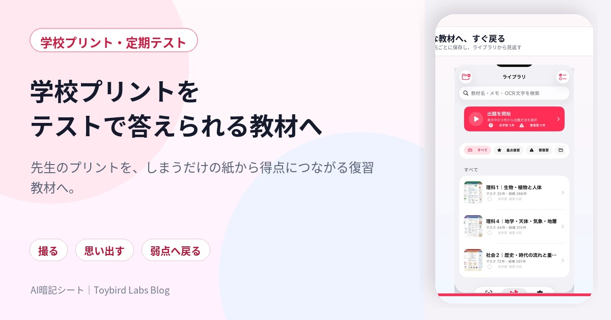
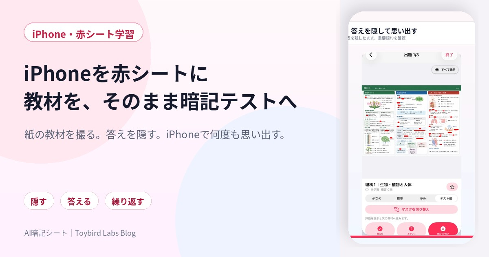
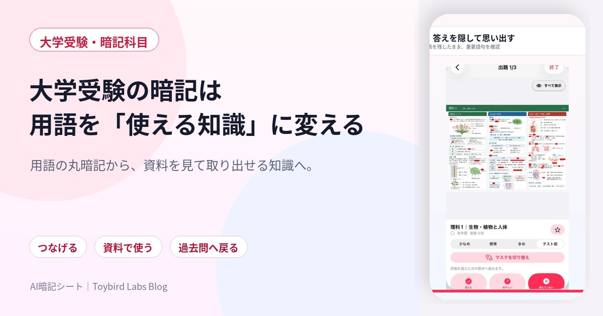
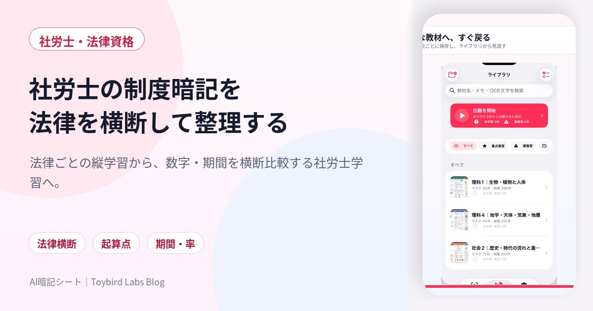
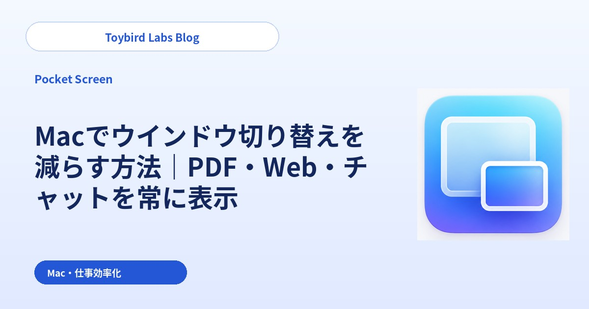
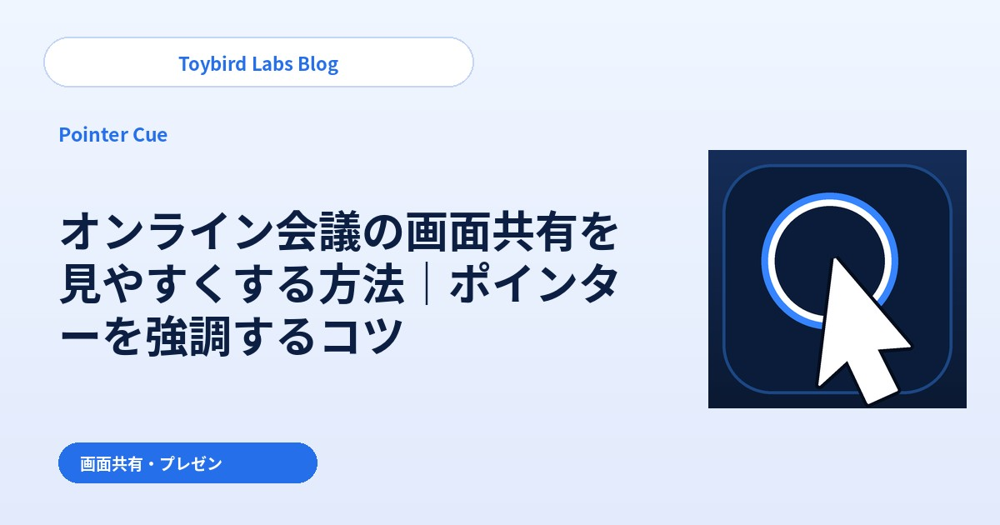
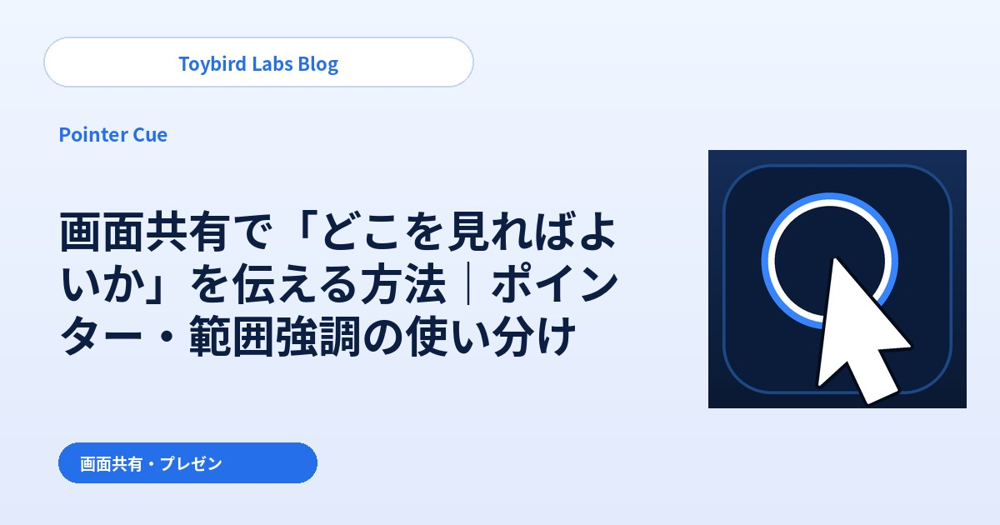

Toybird Labs Blog
仕事の「少し面倒」を減らす、実践ガイド
AIへの指示、MacBook 1画面での作業、伝わる画面共有。今日から試せる手順と例をまとめています。
記事一覧
学習・暗記
機能・課題解決

学校プリントを テストで答えられる教材へ
学校プリントをスマホで暗記する方法を解説。先生が強調した理科・社会のプリントを写真で残し、答えを隠して定期テスト前に繰り返す流れを紹介します。

iPhoneを赤シートに 教材を、そのまま暗記テストへ
iPhoneで赤シート学習をする方法を解説。紙の教材やプリントを撮影し、重要語句を隠して短時間で反復する使い方を紹介します。

保存したPDFを 開くだけの資料から復習教材へ
PDF教材をiPhoneで暗記する方法を解説。印刷せず、必要なページを選び、重要語句を隠してテスト前に反復する流れを紹介します。
受験・定期テスト

中学受験の塾プリントを 合格につながる復習へ
増え続ける塾プリントを、整理で終わらせず得点へ。必要な教材へすぐ戻り、思い出し、弱点だけを繰り返す復習の仕組みを紹介します。

中学の定期テストは 学校プリントを使い切る
中学生の定期テストで学校プリントを効率よく覚える方法を解説。授業当日、範囲発表、1週間前、直前の復習サイクルを紹介します。

高校受験の理科・社会を 「習った」で終わらせない
高校受験の理科・社会を効率よく暗記する方法を解説。3年間の教材を単元別に残し、模試・過去問の誤答から弱点復習へつなげる流れを紹介します。

高校の定期テストは 「まとめ直す」より先に答える
高校の定期テストで授業プリントや教材を使って暗記する方法を解説。生物・歴史・地理・公共などの知識科目を短時間で反復する流れを紹介します。

大学受験の暗記は 用語を「使える知識」に変える
大学受験の日本史・世界史・生物などを効率よく暗記する方法を解説。用語を資料や因果関係と結び、過去問の誤答から弱点復習へつなげます。
資格試験

資格試験の暗記を 通勤・スキマ時間で前へ進める
社会人が資格試験の暗記をスマホで進める方法を解説。宅建、ITパスポート、FP、行政書士、社労士、登録販売者の学習に共通する復習設計を紹介します。

宅建の数字は 条件とセットで覚える
宅建の用語・数字・法令を効率よく暗記する方法を解説。主体、要件、期限、例外をセットにし、過去問の誤答から弱点復習へつなげます。

ITパスポートの略語を 意味と使い道まで結びつける
ITパスポートの用語・略語を効率よく暗記する方法を解説。3分野で分類し、意味・用途・比較対象をセットにして過去問へつなげます。

FPの暗記は 数字の前に「誰の話か」を決める
FP2級・3級の制度・数字を効率よく暗記する方法を解説。対象者、基準日、金額、率、例外をセットにし、学科・実技の問題演習へつなげます。

行政書士の法律知識を 条文の言葉から事例判断へ
行政書士の法律用語・要件・期間を効率よく暗記する方法を解説。主体、要件、効果、手続、期間をセットにし、択一式・記述式へつなげます。

社労士の制度暗記を 法律を横断して整理する
社労士の数字・期間・制度を効率よく暗記する方法を解説。法律を横断し、対象者、起算点、期間、率、手続を比較して反復します。

登録販売者の成分暗記を 名前だけで終わらせない
登録販売者の成分名・作用・副作用を効率よく暗記する方法を解説。成分、作用部位、効能、注意対象、副作用をセットにして反復します。
勉強法の比較

赤シートと暗記カード 教材と目的で使い分ける
赤シートと暗記カードの違いを、作成の手間、文脈、図表、ランダム出題、復習管理で比較。教材と目的に合う勉強法を紹介します。
まずはここから

ChatGPTの使い方｜仕事で役立つ指示（プロンプト）のコツと10の活用例
メールと要約だけで終わらせず、比較・調査・商談練習まで。今日の仕事で試せる10の例と、回答を具体的にする5つのコツをまとめました。
今日の仕事から選ぶ

ChatGPTで取引先への断りメールを作る方法｜角が立たない例文とプロンプト
断りたい。でも関係は悪くしたくない。対応できない条件と代替案を、角が立ちにくいメールへまとめる方法です。

ChatGPTで会議メモからTo-Doを整理する方法｜担当者・期限・未決事項を抽出
会議メモはあるのに、担当者と期限が見えない。決定事項・To-Do・未決事項まで、次に動ける形へ整理します。

ChatGPTの回答がずれる原因と修正方法｜期待通りに直す指示例
「そうじゃない」と感じた回答を、最初からやり直さずに修正。長さ・文体・事実のずれを直す追加指示を紹介します。

ChatGPTで顧客への返信メールを作る方法｜問い合わせ対応の例文とプロンプト
謝るべきか、どこまで約束してよいか迷う顧客返信。確認済みの事実と次の対応を整理し、送れる下書きを作ります。

ChatGPTに不足情報を質問してもらう方法｜質問させるプロンプト例
何を伝えればよいか分からないときは、先にChatGPTから聞いてもらう。質問数と順番を決めるプロンプト例です。

ChatGPTで長い資料を目的別に要約する方法｜仕事向けプロンプト例
長い資料を短くしたのに、判断材料が抜けている。読み手と目的を決め、残す情報を変える要約方法を紹介します。

ChatGPTで文章を相手別に書き換える方法｜顧客・上司・社内向けのプロンプト例
顧客・上司・社内に同じ文章を送らない。事実は変えず、相手に届く順番と言葉へ書き換えます。

ChatGPTで複数の候補を比較する方法｜比較表と推奨案を作るプロンプト
比較表はできたのに、結論が出ない。比較軸・優先順位・不足情報をそろえ、判断に使える推奨案まで作ります。

ChatGPTを営業・商談のロールプレイに使う方法｜質問とフィードバックのプロンプト
想定質問の暗記ではなく、予想外の問いに答える練習へ。顧客役・反論・振り返りまでをChatGPTで設計します。
MacBook 1画面の生産性を上げる

MacBook 1台・1画面で作業効率を上げる方法｜資料を見ながら快適に作業
資料を開いては戻る往復を減らし、MacBook 1台でも入力画面を広く保つ方法を、標準機能と小窓表示で比較します。

Macでウインドウ切り替えを減らす方法｜PDF・Web・チャットを常に表示
PDFやチャットを見るたびに入力位置を見失う人へ。主作業を狭くせず、確認用の画面だけを残す方法です。

MacのStage Managerで作業効率を上げる方法｜参照画面を見失わない使い方
Stage Managerで整理したのに、必要な資料まで隠れる。作業グループと常に見たい参照画面を分ける方法を紹介します。
ScreenBrushを探している方へ

ScreenBrushより簡単なプレゼン向けアプリ｜Pointer Cue
ScreenBrushを勧められて検索した方へ。モードを切り替えずに指す・囲む、Pointer Cueの違いを紹介します。

Macのプレゼンを見やすくする方法｜ScreenBrushとPointer Cue
資料へ描くプレゼンと、実際の画面を操作するプレゼン。目的に合わせた使い分けを整理します。

オンラインミーティングを分かりやすくするMacアプリ｜ScreenBrushとPointer Cue
画面共有でカーソル、範囲、現在のウインドウを見失わせないための実践的な使い方です。
リモート会議・製品デモを分かりやすくする

オンライン会議の画面共有を見やすくする方法｜ポインターを強調するコツ
画面共有中に「今どこですか？」と聞かれないために。ポインターの動かし方と、必要な瞬間だけの強調を整理します。

Macのプレゼン・製品デモで注目箇所を強調する方法｜アクティブウインドウを見やすく
複数アプリを行き来するデモで、今どの画面かを迷わせない。操作中のウインドウを見やすく保つ方法です。

画面共有で「どこを見ればよいか」を伝える方法｜ポインター・範囲強調の使い分け
「右上を見てください」だけでは伝わらない。点・範囲・ウインドウを分けて示し、参加者の視線をそろえます。